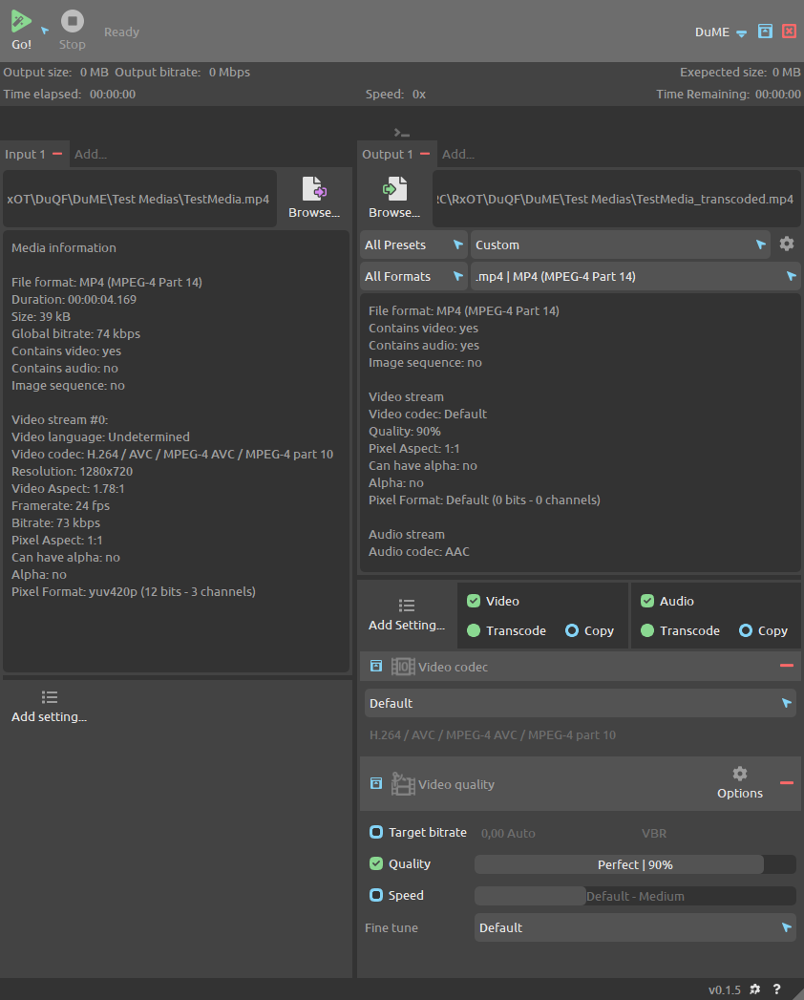

DuME Introduction¶
DuME is a Free and Open Source Media Encoder.
It is fast, versatile, and easy-to-use.
It is mainly based on FFmpeg, a very fast and versatile command-line media encoder.
DuME is also able to render and transcode Adobe After Effects projects and to render Blender scenes.
Description¶

The goal of DuME is to be as easy to use as possible even for beginners, without any compromise on functionnality for advanced users.
To achieve this goal, the development of the application follows these guidelines:
- The User Interface has to be both intuitive and nice-looking, as well as fast.
- Transcoding to standard formats (mp4, PNG…) is straightforward, thanks to carefully crafted presets.
- The most common parameters (resolution, frames per second, codec, quality…) can easily be set through the user interface
- Advanced users can add any other parameter available in FFmpeg thanks to the “custom parameters”, or even input their own commands through the included command line.
- Common parameters and Custom parameters can be saved as easy-to-use User Presets.
Available Features¶
- Transcode any audio or video file, from any format supported by FFmpeg to any other format supported by FFmpeg.
- Easy presets for: mp4, wav, PNG, EXR, Quicktime HAP, GIF… - evolving list.
- Transcode to and from Image Sequences (PNG, EXR…).
- Mix Media files (e.g. add sound to an image sequence).
- Render After Effects projects and transcode to any format supported by FFmpeg - work in progress.
Planned Features¶
- Render/Transcode queue.
- Simplify After Effects rendering setup.
- Simple media player (using ffplay).
- Preview of the input.
- Preview of the output.
- Render Blender scenes.
- Append several inputs.
- Add subtitles tracks.
- Per-stream options for the output.
- Burn subtitles in picture.
- Burn Metadata in picture (Timecode…).
About DuME¶
If you like this free software, please support the developer on Patreon to help the continuation of the development of free tools.
License¶
Software¶
DuME Copyright (c) 2017-2020 Nicolas Dufresne and Contributors
DuME is licensed under the GNU General Public License v3.
It also uses FFmpeg and Qt.
FFmpeg Copyright (c) the FFmpeg developers
Qt Copyright (c) The Qt Company
This program is free software; you can redistribute them and/or modify them under the terms of the GNU General Public License as published by the Free Software Foundation; either version 3 of the License, or (at your option) any later version.
This program is distributed in the hope that it will be useful, but WITHOUT ANY WARRANTY; without even the implied warranty of MERCHANTABILITY or FITNESS FOR A PARTICULAR PURPOSE. See the GNU General Public License for more details.
You should have received a copy of the GNU General Public License along with DuME. If not, see http://www.gnu.org/licenses/.


Documentation¶
Copyright (C) 2019-2020 Nicolas Dufresne and Contributors.
Permission is granted to copy, distribute and/or modify this document under the terms of the GNU Free Documentation License, Version 1.3 or any later version published by the Free Software Foundation;
with no Invariant Sections, no Front-Cover Texts, and no Back-Cover Texts.
A copy of the license is included in the section entitled “Documentation License”.